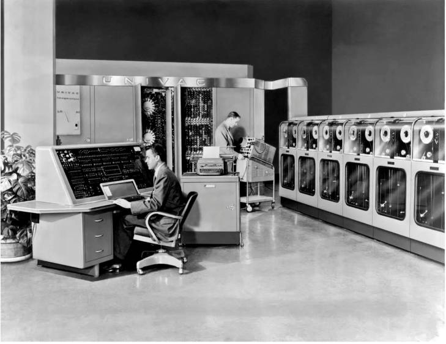
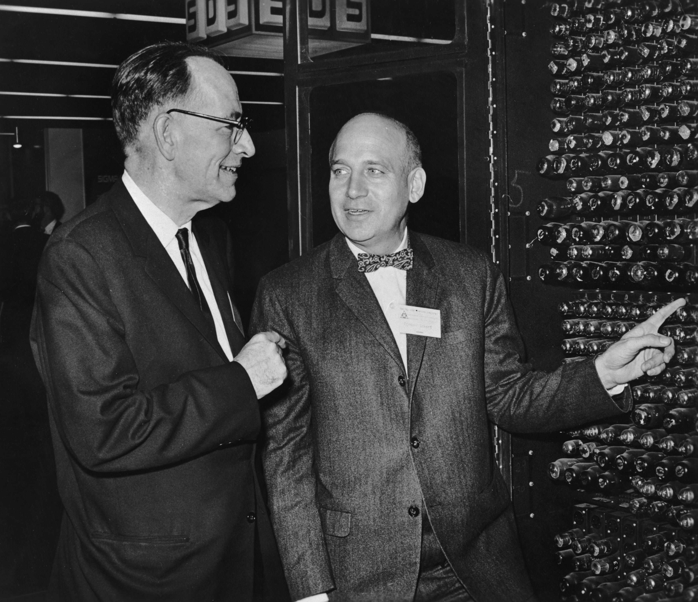
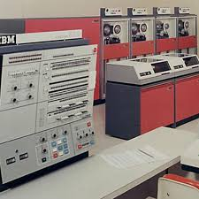
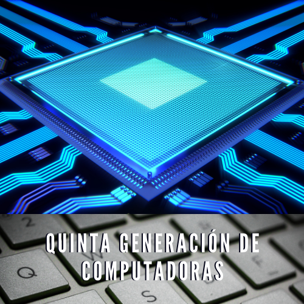

Esta generación genera grandes avances tecnológicos a partir de la búsqueda de un instrumento de ayuda
En el ámbito científico y en el militar. Estas computadoras fueron muy notorias y particulares por la
Magnitud de su tamaño y por el poco poder para adquirir una. Contaban con el uso de tubos al vacío para
Procesar la información, tarjetas perforadas para la entrada y salida de los datos y programas, y usaban
Cilindros magnéticos para almacenar información e instrucciones internas.
Las primeras en el mercado tengan un coste aproximado de unos 10.000 dólares. Por ser de gran tamaño,
Su uso implicaba una gran cantidad de electricidad, generando un sobre calentamiento en el sistema, llegando
A requerir sistemas auxiliares de aire acondicionado especial (con el fin de evitar este sobrecalentamiento).
Como por ejemplo, el ordenador ENIAC de grandes dimensiones que llegaba a pesar 30 toneladas.
Los ordenadores de primera generación usaban tambores magnéticos como elementos de almacenamiento de datos.
Dentro de los inventores más representativos de esta generación se encuentran Howard Aiken, Eckert y Mauchly, Von Neumann y Arthur W. Burks.

Durante 1950 se construyeron varias computadoras notables, cada una contribuia con avances significativos, como aritmetica binaria, acceso
aleatorio y el concepto de programas almacenados. Estos conceptos de computacion, comunes en
las computadoras de hoy.
La instalacion de la primera computadora comercial fue en la Oficina de Censos Estadounidense
en 1951. Esta computadora, llamada UNIVAC 1 (Universal AutomaticComputer), la construyeron Mauchly
y Eckert para la Remington-Rand Corporation. Esto hizo que la Sperry UNIVAC Division, que despues
se convertiria en la SperryCorporation, se colocara por encima de la competencia. El gobierno federal
aprovecho muy bien el dinero invertido en la UNIVAC 1:la oficina de Censos la utilizo durante 12 a�os.
Hoy en dia, damos por sentado que las computadoras pueden emplearse para predecir a los ganadores en las
elecciones nacionales. A menudo se hacen predicciones acerca de los resultados de las elecciones antes de
que cierren las urnas en los estados de la Union Americana de la costa occidental. A finales de 1951, el
noticiero de la CBS creyo en la UNIVAC 1 cuando esta predijo con mucho tino la victoria de Dwight Eisenhower
sobre Adlai Stevenson en la eleccion presidencial, con el 5% de los votos contados. Hoy, los sistemas de
informacion complejos son herramientas primordiales para la compleja cobertura de las elecciones transmitidas
por television.

univac
SEGUNDA GENERACION DE COMPUTADORAS
1956-1963
Esta generación marca una nueva era que se definió por el reemplazo de las válvulas de vacío por los transistores, lo que implicó la creación de computadoras más confiables y con menores necesidades de ventilación, haciéndolas comercialmente accesibles y poderosas.
Además, el uso de lenguajes de alto nivel permitió el mejoramiento en la implementación de programas y su uso en sistemas de reservaciones de líneas aéreas, control del tráfico aéreo y simulaciones de propósito general. Las grandes empresas comenzaron a utilizar
La computadora en tareas de almacenamiento, registro, manejo de inventarios, nómina y contabilidad.200 transistores podían acomodarse en la misma cantidad de espacio que un tubo al vacío, característica que los hacia más rápidos, pequeños y más confiables.
Se comenzó a disminuir el tamaño de las computadoras y se utilizaban pequeños anillos magnéticos para almacenar información e instrucciones. Por otra parte, se mejoraron los programas de computadoras que fueron concebidos durante la primera generación, ya que se
Desarrollaron nuevos lenguajes de programación como COBOL y FORTRAN.
Dentro de los inventores más representativos de esta generación se encuentra William Bradford Hockey, Walter Houser Brattain y John Bardeen por sus investigaciones sobre los semiconductores y por sus descubrimientos acerca del efecto transistor.
Beneficios mas destacados de remplazar las valvulas de vacio por transistores
*Menor tamaño, que permitia ubicarlas en lugares mas accesibles.
*Menor consumo electrico, que representaba menos costos.
*Menos necesidades de refrigeracion, tambien relacionado con los costos y la ubicacion.
*Menor precio, ya que los transistores eran mas baratos de producir que las valvulas.
*Mayor velocidad. Los transistores pueden alcanzar mayores velocidades de operacion que las valvulas de vacio.
*Mayor fiabilidad. Los transistores son menos propensos a las fallas que las valvulas, que al ser de vidrio son mucho mas fragiles.
Para la mayoria de las personas, el invento del transistor significo radios portatiles. Para aquellos
inmersos en el negocio del procesamiento de datos, seria el comienzo de la segunda generacion
de computadoras. El transistor represento la construccion de computadoras mas poderosas, mas
confiables y menos costosas que ocuparian menos espacio y producirian menos calor que las
computadoras que operaban basandose en tubos al vacio.
Sin embargo, se tomaria en cuenta el factor costo. El costo de una computadora durante la
primera, la segunda, y parte de la tercera generacion representaba una porcion significativa del
presupuesto de una compania. Las computadoras eran costosas.
El desarrollo de los lenguajes de ensamblador facilito los problemas de la programacion al inicio
de esta generacion. Los ensambladores son los programas que permiten al programador utilizar
numeros (signos alfabaticos casi siempre) para representar los codigos de maquinas.
TERCERA GENERACION DE COMPUTADORAS
(1964-1971)
Las computadoras de la tercera generación poseían circuitos integrados, en otras palabras, circuitos obtenidos,
grabando cientos y más tarde, miles de transistores microscópicos en los chips de silicio. Dichos dispositivos
se conocían como semiconductores. Por otra parte, la capacidad de memoria de estas computadoras llegaba hasta
2 megabytes y la rapidez del procesamiento alcanzaba 5 millones de instrucciones por segundo. Esta generación
de computadoras, permitío la introducción de programas capaces de ser manipulados por los usuarios sin formación
técnica. Los circuitos integrados permiten la colocación de enormes cantidades de dispositivos electrónicos en un
mínimo espacio, logrando disminuir nuevamente el tamaño de la computadora e incorporando la multiprogramación. Su
uso revolución la forma de componer computadoras, vigente hasta hoy en da en la fabricación de celulares y
calculadoras. Dentro de los inventores más representativos de esta generación se encuentra Jack St. Claire Kelly
y Robert Noyce, Ted Hoff y George Gamow.
Basicamente los avances en las computadoras de la tercera generacion fueron los siguientes:
*Menor consumo
*Mayor capacidad de proceso
*Mas facilidad para programarla
*Mas transportables
*Mas entendibles para todo tipo de usuarios

Lo que consideran algunos historiadores de la computadora como el suceso mas importante en la
historia de la computacion, ocurrio cuando la IBM anuncio su linea de computadoras
Sistemas 360, el 7 de abril de 1964.
Los problemas de compatibilidad de las computadoras de la segunda generacion casi se
eliminaron en las de la tercera. No obstante, las computadoras de la tercera generaci?n difer?an
radicalmente de las de segunda generacion.
Las computadoras de la Tercera Generacion trabajan a tal velocidad que proporcionan la
capacidad de correr mas de un programa de manera simultanea (multiprogramacion). Por
ejemplo, en cualquier momento dado, la computadora podria estar imprimiendo cheques de
nomina, aceptando ordenes y probando programas. Aunque las computadoras de tercera
generaci?n continuaron proporcionando capacidades de procesamiento de cinta, los sistemas de
computacion se desarrollaron para estimular el uso del procesamiento aleatorio y de los discos
magneticos rotatorios.
La mini computadora. La demanda de computadoras pequeñas en los negocios y para
aplicaciones cientificas era tan grande que muchas companias fabricaron solo computadoras
pequeñas. A estas se les llamo Mini computadoras.
CUARTA GENERACION DE COMPUTADORAS
(1971 a 1981)
En la cuarta generacion de computadoras hubo un cambio radical que marca un antes y un despues en la revolucion tecnologica, todo esto debido a la aparicion de los microprocesadores
que significaron un gran avance de la microelectrinica. Se trata de circuitos integrados rapidos y de alta densidad. Economicas y reducidas en tamaño, las microcomputadoras se extienden
al mercado industrial. Con esto aparecen las computadoras personales, volviendose imprescindibles en nuestra sociedad, dandole la bienvenida a la "revolucion informatica".
La pequeña dimension del microprocesador de chips fue fundamental para la creacion de las computadoras personales (PC). En la actualidad las tecnologias LSI (Integracion a gran escala)
y VLSI (Integracion a muy gran escala) permiten que miles de componentes electronicos se almacenen en un chip.
Dentro de los inventores mas representativos de esta generacion se encuentra Steve Jobs y Bill Gates.
La mayoria de los distribuidores consideran que sus computadoras pertenecen a la Cuarta
Generacion, y hay algunos que llaman a las suyas de quinta generacion. Las primeras tres
generaciones se caracterizaron por los importantes avances tecnologicos en la electronica:
primero el uso de tubo al vacio, luego los transistores y despues los circuitos integrados. Hay
quienes prefieren fijar el comienzo de la cuarta generacion en 1971, con la aparicion de la
integracion a gran escala (mas circuitos por unidad de espacio), de circuitos electronicos.
Sin embargo, otros diseñadores de computadoras afirman que de aceptar esa premisa, quiza
hubiera habido una quinta, sexta y hasta s?ptima generacion desde.1971.
La tecnologia base de las computadoras de hoy es todavia el circuito integrado. Esto no requiere
decir que han pasado dos decadas sin innovaciones significativas. En realidad, la industria de la
computacion ha experimentado una sorprendente sucesion de avances en al miniaturizacion cada
vez mas marcada de los circuitos, en la comunicacion de datos, en el diseño del hardware
software, y en dispositivos de entrada / salida.
El microprocesador. Una de las contribuciones mas importantes al surgimiento de la cuarta
generacion de computadoras es el microprocesador que puede estar contenido en una pastilla de
silicio o chip y que es el producto de la micro miniaturizacion de los circuitos electronicos. El
primer procesador totalmente operacional, al que se llama a veces computadora dentro de un
circuito, se invento en 1971. Hoy, tenemos mas microprocesadores que gente sobre la Tierra.
Este dispositivo cuesta menos que un refresco y puede encontrarsele en cualquiera parte, desde
ascensores hasta satelites.
QUINTA GENERACION DE COMPUTADORAS
En esta generacion de computadoras se vive una era en la cual la mayoria de las cosas son controladas por diferentes tipos de maquinas. Estas computadoras se basan en una inteligencia artificial muy sofisticada. Asimismo, utilizan varios CPU para tener una velocidad de manejo de la informacion mas rapido.
El computador mas destacado de la quinta generacion de computadoras fue el PC o el computador portatil, a raiz del planteamiento de no solo producir maquinaria a nivel industrial sino tambien, una herramienta para el uso diario. Fue generado y producido por parte de la International Business Machines Corporation (IBM),
presentando una primera propuesta con la cual se revoluciona todo lo que se conocia hasta los momentos en el sector de tecnologia.Partiendo del requerimiento de una herramienta de almacenamiento, surge el disquete o disco flexible, lo que brindo un soporte que respaldara la informacian y que fuera extraible para ser empleado
en otros dispositivos, creando a su vez una unidad dirigida al uso de estos.Tambien se logro lanzar las primeras versiones de un sistema operativo, en este caso fue Microsoft Windows (MS) en el año 1985, el cual compite a su vez con el lanzamiento de Apple, aunque estos primeros sistemas carecian de efectividad a la hora de
su funcionamiento y no eran mas que una propuesta.

En vista de la acelerada marcha de la microelectronica, la sociedad industrial se ha dado a la tarea
de poner tambien a esa altura el desarrollo del software y los sistemas con que se manejan las
computadoras. Surge la competencia internacional por el dominio del mercado de la computacion, en la que
se perfilan dos lideres que, sin embargo, no han podido alcanzar el nivel que se desea: la capacidad de
comunicarse con la computadora en un lenguaje mas cotidiano y no a traves de codigos o lenguajes de control
especializados.